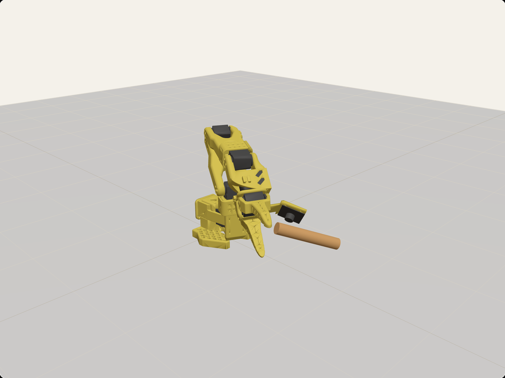

Nebius × NVIDIA Global AI Hackathon · Physical AI
Understudy
Watch an astronaut do a task once. Ask what the camera couldn’t see. Rehearse it on a simulated SO-101, on Earth and in orbit. Patch what fails.

live · SO-101 in MuJoCo · 0 g
“When does putting the seed film in the pillow count as done?”Nemotron asks what the clip can’t show
watch→
ask→
rehearse · 1 g / 0 g→
patch
Nemotron 3.5 Super VL · Nano · Super · Ultra
on Nebius Token Factory